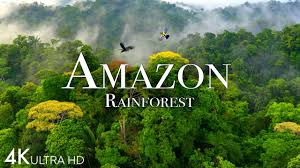
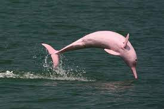
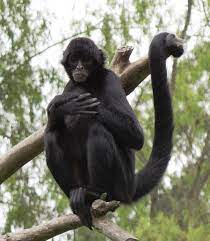
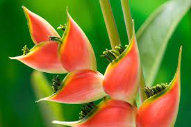
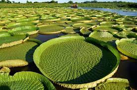

Home Page
The Forest
Tropical Rainforest
Amazon Forest
Amazon Rainforest

The Amazon rainforest,[a] also called Amazon jungle or Amazonia, is a moist broadleaf tropical rainforest in the Amazon biome that covers most of the Amazon basin of South America. This basin encompasses 7,000,000 km2 (2,700,000 sq mi), of which 5,500,000 km2 (2,100,000 sq mi) are covered by the rainforest. This region includes territory belonging to nine nations and 3,344 formally acknowledged indigenous territories.
The majority of the forest, 60%, is in Brazil, followed by Peru with 13%, Colombia with 10%, and with minor amounts in Bolivia, Ecuador, French Guiana, Guyana, Suriname, and Venezuela. Four nations have "Amazonas" as the name of one of their first-level administrative regions, and France uses the name "Guiana Amazonian Park" for French Guiana's protected rainforest area. The Amazon represents over half of Earth's remaining rainforests,[2] and comprises the largest and most biodiverse tract of tropical rainforest in the world, with an estimated 390 billion individual trees in about 16,000 species.[3]
More than 30 million people of 350 different ethnic groups live in the Amazon, which are subdivided into 9 different national political systems and 3,344 formally acknowledged indigenous territories. Indigenous peoples make up 9% of the total population, and 60 of the groups remain largely isolated.[4]
Amazon forest Animals
- Amazon river dolphin

- The Amazon river dolphin, also known as the boto, bufeo or pink river dolphin, is a species of toothed whale which is native to and is exclusively of South America classified in the family Iniidae
- Also known as the Amazon River dolphin, the pink dolphin thrives in freshwater and is characterized by its rosy hue and pointed rostrum.
- Spider monkeys

- Spider monkeys are New World monkeys belonging to the genus Ateles, part of the subfamily Atelinae, family Atelidae. Like other atelines, they are found in tropical forests of Central and South America, from southern Mexico to Brazil.
- Monkeys derive their name from the Uakari tribe that once lived in the Amazon but is now extinct.
Amazon Forest Plants
- heliconia flower (lobster-claw)

- This beautiful Amazonian flora is known as the Hanging Lobster Claw. This flower is bright in color and varies in its shape. Known for their characteristically long structure, heliconia plants range from 0.5 to nearly 4.5 meters (1.5–15 feet) tall depending on the species and their leaves are 15–300 cm (6 in-10 ft) in size. They require warm and humid conditions to grow, thus being prominent in the tropical regions of the world. Hummingbirds rely on Heliconia plants for food and nesting, and they are also the main pollinators of the plant.
- 1. Giant Water Lily

- f you have ever been on an Amazon River cruise or stayed in a jungle lodge, you may have seen these impressive Victoria water lilies during one of your jungle excursions. These water lilies are not your average flower – they grow up to 3 meters in diameter – imagine, you could lay down on one! They were named after Queen Victoria of the United Kingdom.